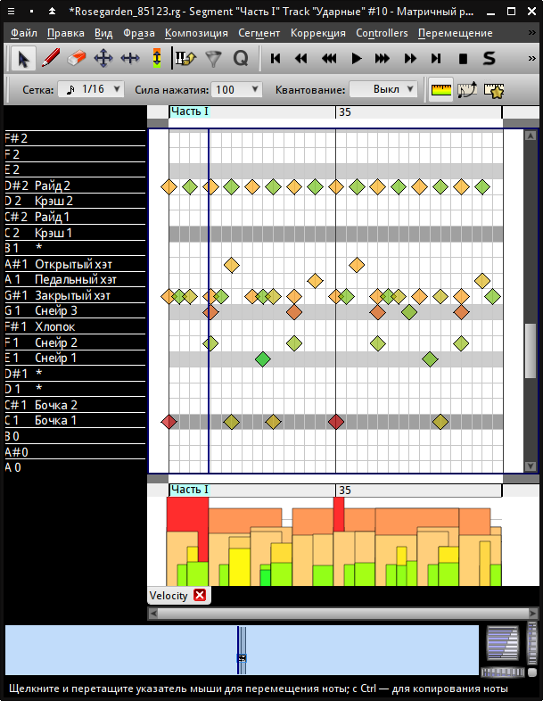

Перейдём на позицию маркера Часть I, создадим петлю до следующего элемента. Попробуем создать здесь куплет. Куплет и рефрен должны сочетаться между собой, как вопрос-ответ, аргумент-контраргумент, быть контрастными. Создаём рисунки ударных и баса:
